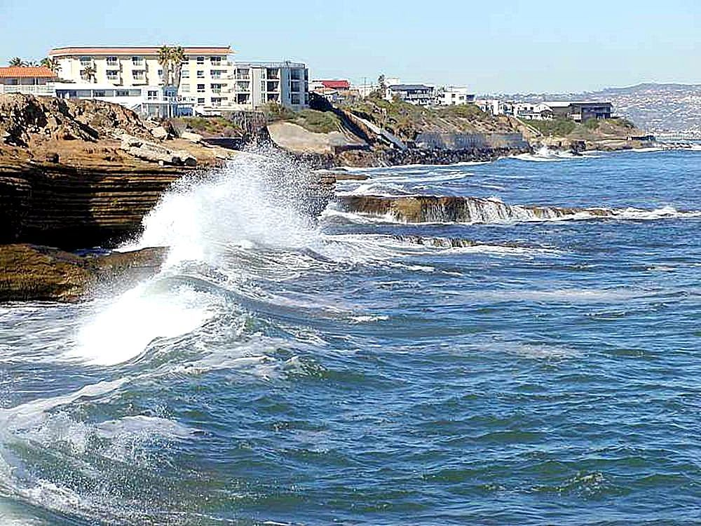

كتاب العلوم — الجزء الأول من المقرر — طبعة ١٤٤٧ / ٢٠٢٥
معالم سطح الأرض
الصف الخامس الابتدائي الوحدة الثالثة: الأرض ومواردها الفصل الخامس: أرضنا المتغيرة — الدرس الأول
إعداد: نايف المطيري
موقع الدرس
أين نحن من الكتاب؟
ص ١٤٤
الوحدة الثالثة
الأرض ومواردها
الفصل الخامس
أرضنا المتغيرة
الدرس الأول
معالم سطح الأرض
السؤال الأساسي: كيف توصَف تضاريس الأرض؟
أهداف التعلم
ماذا سأتعلم في هذا الدرس؟
أُعرِّف التضاريس وأذكر أمثلة عليها.
أُصنِّف معالم اليابسة والمعالم المائية.
أَصِف أهمَّ معالم قاع المحيط.
أُبيِّن كيف توصَّل العلماء إلى معرفة قاع المحيط.
أُميِّز أغلفة الأرض: الجوي والمائي والحيوي.
أَصِف طبقات الأرض: القشرة والسِّتار واللُّب.
أُوضِّح الصفائح الأرضية وحركتها وأثرها.
أُوظِّف مهارة التصنيف.
تمهيد
لنبدأ بسؤال
البحر الأحمر يتَّسع بمعدل ٢ سم كلَّ سنة… فما الذي يجعله يتَّسع؟
حركة الصفائح الأرضية. لنتعرَّف أولًا معالم سطح الأرض وأغلفتها.
معرفة سابقة
ما أعرفه من قبل
اليابسة والماء
سطح الأرض فيه يابسة وماء.
الصخور
الجزء الصلب من سطح الأرض.
البراكين والزلازل
أحداث طبيعية تغيِّر سطح الأرض.
المفردات
مفردات الدرس
ص ١٤٦
التضاريس
المعالم الطبيعية لسطح الأرض.
الغلاف الجويُّ
غطاء غازيٌّ يحيط بالأرض ويحوي جميع الغازات الموجودة على سطحها.
الغلاف المائيُّ
يشمل المياه في الحالتين الصلبة والسائلة.
القشرة الأرضية
الجزء الصخريُّ (الصلب) من سطح الأرض.
السِّتار
المنطقة التي تلي القشرة الأرضية.
اللُّبُّ
يقع أسفل الستار السفليِّ ويشكِّل الكتلة المركزية للأرض.
اللُّبُّ الخارجيُّ
نطاق خارجيٌّ سائل من اللُّب.
اللُّبُّ الداخليُّ
نطاق داخليٌّ صلب من اللُّب.
الغلاف الحيويُّ
جزء من الأرض تعيش فيه جميع المخلوقات الحيَّة.
مهارة القراءة في هذا الدرس: التصنيف.
أستكشف — نشاط استقصائي
ما معالم سطح الأرض؟
ص ١٤٥ — نشاط الكتاب
الهدف: أتفحَّص معالمَ سطح الأرض وأصنِّفها.
الخطوات:
ألاحظ. أنظر إلى الصور.
أعدُّ قائمةً بمعالم سطح الأرض الظاهرة في الصور.
أتواصل. فيمَ تتشابه هذه المعالم، وفيمَ تختلف؟
صور النشاط من الكتاب: شاطئ شمال ينبع · وادي حنيفة – الرياض جبال طويق – الرياض · وادي لجب – جازان
أستكشف — نشاط استقصائي
أستخلص النتائج · أستكشف أكثر
ص ١٤٥ — أسئلة الكتاب
٤. أصنِّف. أتعرَّف المجموعات التي أستطيع من خلالها تصنيف هذه المعالم.
سؤال الكتاب — ص ١٤٥إجابة نموذجية مقترحة: أصنِّفها إلى معالم يابسة (جبال طويق) ومعالم مائية (شاطئ شمال ينبع). ويمكن تصنيفها أيضًا إلى: مرتفعات (الجبال) ومنخفضات (الأودية: وادي حنيفة ووادي لجب) ومناطق مستوية. وكذلك بحسب طريقة تشكُّلها: ما شكَّلته المياه الجارية (الأودية) وما شكَّلته حركة الصفائح (الجبال).
٥. أستنتج. ما العمليات التي نتج عنها واحد أو أكثر من المعالم التي حدَّدتها؟
سؤال الكتاب — ص ١٤٥إجابة نموذجية مقترحة: الأودية نتجت عن جريان المياه وتعريتها للصخور والتربة عبر زمن طويل. والشاطئ نتج عن التقاء اليابسة بالماء وعمل الأمواج في الصخور والرمال. والجبال نتجت عن حركة الصفائح الأرضية وتقاربها.
أستكشف أكثر: أجد صورًا لواد سحيق، وأتوقَّع ما يحدث للصخور عندما تتدفَّق عليها المياه فترةً طويلةً. أكوِّن فرضية حول دور المياه في تشكُّل الوادي. أصمِّم تجربة أختبر فيها فرضيَّتي.
الشرح والتفسير
ما معالم سطح الأرض؟
ص ١٤٦
ماذا ترى عندما تسافر عبر بلادنا الغالية أو إلى مناطق أخرى من العالم؟ إنك ترى الشواطئَ الرملية والشواطئَ الصخرية، وقد تشاهد تلالًا وهضابًا وجبالًا وصحاريَ ووديانًا. قد تسافر متنقلًا عبر البحار والأنهار والبحيرات.
جميع هذه المعالم تشكِّل التضاريس، وهي المعالم الطبيعية لسطح الأرض. ولكلِّ واحد من هذه التضاريس خواصُّه التي تميِّزه، وتجعله يتشكَّل بطريقة مختلفة عن غيره.
وقد أشار القرآن الكريم إلى بعض هذه التضاريس باعتبارها شاهدًا على عظمة خالقها عزَّ وجلَّ. قال تعالى: ﴿أَلَمْ نَجْعَلِ الْأَرْضَ مِهَادًا وَالْجِبَالَ أَوْتَادًا﴾ سورة النبأ: الآيتان ٦ – ٧
الشرح والتفسير
معالم اليابسة
ص ١٤٧
المَعْلَم
التعريف
الجبل
منطقة مرتفعة كثيرًا فوق سطح الأرض.
التلُّ
أقلُّ ارتفاعًا من الجبل، وأكثر استدارةً.
الوادي
منطقة منخفضة تمتدُّ بين جبلين أو تلَّين.
الخانق (الوادي السحيق)
واد ضيِّق، جوانبه عالية وشديدة الانحدار.
الجرف
الجانب الحادُّ الميل من الصخور أو التربة.
السهل
منطقة واسعة منبسطة.
الهضبة
منطقة منبسطة أكثر ارتفاعًا من الأراضي المحيطة.
الصحراء
أرض واسعة يندر هطول الأمطار عليها.
الشاطئ
أرض على امتداد حافة المسطحات المائيَّة.
الكثبان الرملية
كومة أو نتوء من الرمال.
الشرح والتفسير
المعالم المائية
ص ١٤٧
المَعْلَم
التعريف
البحر أو المحيط
مساحة واسعة مغطَّاة بالمياه المالحة.
الساحل
خطٌّ تلتقي عنده اليابسة مع الماء.
النهر
مساحة طبيعية لجريان الماء وانتقاله.
الرافد
نهر صغير أو جدول ماء يصبُّ في نهر كبير.
الشلَّال
تيار من المياه الطبيعية يسقط من مكان مرتفع.
البُحَيْرة
مساحة من المياه تحيط بها الأراضي اليابسة.
المصبُّ
مُلتقَى مياه النهر ومياه المحيطات أو البحار.
الدلتا
أرض لها شكل المثلث تتشكَّل عند مصبِّ النهر.
سؤال تحقُّق
يابسة أم مائية؟
ص ١٤٧
أقرأ اسم المَعْلَم، ثم أختار نوعه.
——
أبدأ التصنيف.
النتيجة: ٠ / ٠
أختبر نفسي
أسئلة الكتاب
ص ١٤٧
أصنِّف. ما اسم المَعْلَم المُحاذي لحافَة البحر في الصُّورة؟
سؤال الكتاب — ص ١٤٧الساحل؛ وهو خطٌّ تلتقي عنده اليابسة مع الماء. ويظهر بجواره في الصورة الجرف، وهو الجانب الحادُّ الميل من الصخور أو التربة.
التفكير الناقد. ما المَعْلَم أو المعالم التي أراها بالقرب من المدينة التي أسكن فيها؟
سؤال الكتاب — ص ١٤٧إجابة نموذجية مقترحة: يذكر الطالب معالم بيئته؛ ففي الرياض مثلًا: جبال طويق (هضبة وجبال) ووادي حنيفة. وفي ينبع: الشاطئ والساحل. وفي جازان: وادي لجب (خانق) والجبال. وفي المناطق الصحراوية: الكثبان الرملية والصحراء.
الشرح والتفسير
ما معالم قاع المحيط؟
ص ١٤٨
هل هناك تضاريس تشبهها تحت سطح مياه المحيطات والبحار؟ لو استطعتُ أن أغوص تحت سطح مياه المحيط فسوف أشاهد معالمَ تشبه الجبالَ والوديانَ والسهولَ.
الرَّصيف القاريُّ
شريط يحاذي شواطئ القارة، وهو يميل ميلًا خفيفًا، ويمتدُّ من خطِّ الشاطئ حتى حافة المنحدر، حيث يصير الانحدار شديدًا.
المنحدر القاريُّ
يبدأ من حافة الرصيف، حيث يتزايد العمق سريعًا، ويتزايد انحدار السطح نحو قاع المحيط.
المرتفع القاريُّ
منطقة ذات ميل خفيف تلي المنحدرَ القاريَّ.
الشرح والتفسير
معالم أخرى في قاع المحيط
ص ١٤٨
الأخاديد البحرية
أعمق مناطق قاع المحيط، تتميَّز بطولها الكبير وعرضها الضيِّق.
ظهر المحيط
سلسلة جبلية طويلة تحت الماء يخترقها بشكل طوليٍّ واد متصدِّع يكون على قمة هذه الجبال.
سهول قاعية منبسطة
سهول شاسعة تعدُّ أكثر مناطق قاع المحيط انبساطًا، وتشكِّل ٤/١٠ من مساحة قاعه.
الجبال البحرية
جبال ترتفع من قاع المحيط، من دون أن تعلوَ فوق سطح المياه. فإذا ارتفعت فوق سطح الماء سُمِّيت جزرًا بركانية.
أقرأ الشكل
سؤال الكتاب
ص ١٤٨
ماذا نطلق على الجزء المستوي من قاع المحيط؟ إرشاد: أتتبَّع الخطَّ الذي يشير إلى المنطقة المستوية.
سؤال الكتاب — ص ١٤٨سهول قاعية منبسطة؛ وهي سهول شاسعة تعدُّ أكثر مناطق قاع المحيط انبساطًا، وتشكِّل ٤/١٠ من مساحة قاعه.
الشرح والتفسير
كيف عرف العلماء قاع المحيط؟
ص ١٤٩
توصَّل العلماء إلى معرفة شكل وتركيب معالم قاع المحيط باستعمال غوَّاصات صغيرة مزودة بآلات تصوير، وأدوات لقياس بيئة المحيط، وأذرع لجمع العينات. كما استفادوا من صور الأقمار الاصطناعية.
وهم اليوم يستطيعون تحديد عمق أيِّ نقطة في أعماق المحيطات بدقة عن طريق جهاز السَّبر الصوتيِّ الذي يعمل وفق مبدأ الصوت والصَّدى.
نشاط
نمذجة قاع المحيط
ص ١٤٩ — نشاط الكتاب
أضع الصلصال في قاع الوعاء، وأعيد تشكيله، بحيث يمثِّل تضاريس قاع المحيط. وكذلك يفعل زملائي بأوعية أخرى.
يغطِّي كلٌّ منَّا الوعاءَ بغطاء مثقَّب على مسافات متساوية مع ترقيم الثُّقوب.
أتبادل الأوعية مع أحد زملائي.
أقيس. أُسقط الماصَّة البلاستيكية بلطف في ثقوب الغطاء، وأقيس المسافة التي غاصتها في كل مرة.
أفسِّر البيانات. أستعمل نتائج قياساتي لأجد ارتفاع تضاريس النموذج، ثم أرسمها.
أنزع غطاء الوعاء، وأقارن نتائجي ورسمي مع تضاريس قاع المحيط.
أتعامل مع الماصَّة والوعاء بحذر، وأغسل يديَّ بعد التعامل مع الصلصال.
أختبر نفسي
أسئلة الكتاب
ص ١٤٩
أصنِّف. أيُّ معالم المحيط المرتفعة لا يصل إلى السطح؟
سؤال الكتاب — ص ١٤٩الجبال البحرية؛ وهي جبال ترتفع من قاع المحيط من دون أن تعلوَ فوق سطح المياه. فإذا ارتفعت فوق سطح الماء سُمِّيت جزرًا بركانية.
التفكير الناقد. استعملت إحدى الغوَّاصات صدى الصوت لقياس عمق الماء في مناطق مختلفة. أيُّ تضاريس قاع المحيط يستغرق صدى الصوت فوقه زمنًا أطول للوصول إلى الغوَّاصة؟
سؤال الكتاب — ص ١٤٩الأخاديد البحرية؛ لأنها أعمق مناطق قاع المحيط، فتكون المسافة التي يقطعها الصوت ذهابًا وإيابًا أطول، فيستغرق الصدى زمنًا أطول للعودة. أما فوق الجبال البحرية أو الرصيف القاريِّ فالعمق أقلُّ والزمن أقصر.
الشرح والتفسير
ما أغلفة الأرض؟
ص ١٥٠
الغلاف الجويُّ
يحيط بالأرض غطاء غازيٌّ يسمَّى الغلاف الجويَّ، ويحوي جميع الغازات الموجودة على سطح الأرض.
الغلاف المائيُّ
يشمل المياه في الحالتين: الصلبة والسائلة، ومنها المحيطات والأنهار والبحيرات والجليديات. ويغطِّي الماء حوالَي ٧/١٠ من سطح الأرض.
الغلاف الحيويُّ
جزء من الأرض تعيش فيه جميع المخلوقات الحيَّة، ويمتدُّ من الجزء السُّفليِّ للغلاف الجويِّ وحتى قاع المحيط.
الشرح والتفسير
طبقات الأرض
ص ١٥٠
يسمَّى الجزء الصخريُّ (الصلب) من سطح الأرض القشرةَ الأرضيةَ، ويتضمَّن القارات وقيعان المحيطات. أمَّا المنطقة التي تلي القشرة الأرضية فتسمَّى السِّتارَ.
طبقات الأرض من الخارج إلى الداخل
القشرة الأرضية
القارات وقيعان المحيطات
السِّتار
الستار العلويُّالستار السفليُّ
اللُّبُّ
اللُّبُّ الخارجيُّ: نطاق سائلاللُّبُّ الداخليُّ: نطاق صلب
حقيقة: يتكوَّن لُبُّ الأرض من صخور صلبة وسائلة.
أختبر نفسي
أسئلة الكتاب
ص ١٥٠
أصنِّف. هل مادة الغلاف الصخريِّ صلبةٌ أم سائلةٌ؟
سؤال الكتاب — ص ١٥٠صلبة؛ فالغلاف الصخريُّ للأرض يتكوَّن من القشرة الأرضية وجزء من الستار العلويِّ، وهو صلب. أما الطبقة التي تليه فهي الغلاف المائع المكوَّن من الصخور المنصهرة.
التفكير الناقد. ما طبقات الأرض التي تشكِّل الغلاف الحيويَّ؟
سؤال الكتاب — ص ١٥٠الغلاف الحيويُّ يمتدُّ من الجزء السُّفليِّ للغلاف الجويِّ وحتى قاع المحيط. فهو يشمل الجزء الأسفل من الغلاف الجويِّ، والغلاف المائيَّ كلَّه، والجزء السطحيَّ من القشرة الأرضية (التربة وسطح الصخور) حيث تعيش المخلوقات الحيَّة.
الشرح والتفسير
ما الصَّفائح الأرضية؟
ص ١٥١
يتكوَّن الغلاف الصخريُّ للأرض من القشرة الأرضية وجزء من الستار العلويِّ. يلي هذا الغلافَ الصخريَّ طبقةٌ من الصخور المنصهرة أُطلق عليها الغلاف المائع، وهو يتكوَّن من الستار السفليِّ وبقية الستار العلويِّ.
ينقسم الغلاف الصخريُّ الصلب إلى ألواح ضخمة تسمَّى صفائحَ. وقد أطلق العلماء اسم الصَّدع على الحدِّ الذي يفصل الصفيحتين إحداهما عن الأخرى.
فإذا اندفعت الصهارة بين صفيحتين فإنَّهما تنزلقان مبتعدةً إحداهُما عن الأخرى. وتأخذ منطقة الصدع في الاتساع لتتشكَّل عبر ملايين السنين محيطًا صغيرًا يستمرُّ في الاتساع مع الزمن.
أمَّا في الجهة الثانية فتقترب الصفيحة المنزلقة من صفائحَ أخرى، وقد تنثني لتشكِّلَ مناطقَ جبليةً.
حركة الصفائح وتكوُّن المحيطات والجبال
١
اندفاع الصهارة بين الصفيحتين
٢
تباعد الصفيحتين وتكوُّن المحيط
٣
تندفع الصهارة بين الصفائحفتتسع المحيطات وتتكون الجبال
الشرح والتفسير
الصفيحة العربية
ص ١٥١
وتعدُّ شبه الجزيرة العربية مثالًا على إحدى الصفائح التي تتحرَّك نحو الشمال الشرقيِّ، فيتَّسع البحر الأحمر تدريجيًّا بمعدل ٢ سم كلَّ سنة، وفي الوقت نفسه تتكوَّن السَّلاسل الجبلية في الجهة الشَّمالية الشَّرقية من الصَّفيحة.
إثراء: يمكنك الرجوع للمتحف الوطني الافتراضي للاطلاع على: الصفيحة العربية. (ورد في الكتاب رمز استجابة سريعة QR؛ ولا يعمل هذا العرض بالإنترنت، فيُرجع إليه من الكتاب.)
أختبر نفسي
أسئلة الكتاب
ص ١٥١
أصنِّف. أيُّ معالم سطح الأرض ينتج عن التقارب بين صفيحتين؟
سؤال الكتاب — ص ١٥١المناطق الجبلية (السلاسل الجبلية)؛ فعندما تقترب الصفيحة المنزلقة من صفائح أخرى قد تنثني لتشكِّلَ مناطقَ جبليةً — كما تتكوَّن السلاسل الجبلية في الجهة الشمالية الشرقية من الصفيحة العربية.
التفكير الناقد. كيف تحرِّك الصهارةُ الصفائحَ الأرضية؟
سؤال الكتاب — ص ١٥١الصهارة (الماجما) موادُّ منصهرة يتكوَّن منها الغلاف المائع، فيشكِّل سطحًا لزجًا تطفو فوقه الصفائح ويتيح لها الانزلاق. وعندما تندفع الصهارة بين صفيحتين تدفعهما فتنزلقان مبتعدةً إحداهما عن الأخرى، فتتَّسع منطقة الصدع، وفي الجهة المقابلة تقترب الصفيحة من صفائح أخرى.
ملخص مصور
ملخص الدرس
ص ١٥٢
١
تحتوي الأرض على الغلاف الجويِّ، والغلاف المائيِّ، والقشرة، والستار، واللُّبِّ.
٢
تغطِّي معالم الأرض كلًّا من سطحها وقاع المحيط.
٣
حركة الصفائح الأرضية تفسِّر تشكيل تكوُّن المحيطات والجبال.
المطويات — أنظم أفكاري: أعمل مطويةً ألخِّص فيها ما تعلَّمته عن معالم سطح الأرض: (معالم سطح الأرض · معالم قاع المحيط · أغلفة الأرض · حركة الصفائح الأرضية).
خريطة المفاهيم
أنظم مفاهيم الدرس
معالم سطح الأرض
معالم اليابسة
جبل · تلٌّ · وادٍ · خانقجرف · سهل · هضبةصحراء · شاطئ · كثبان
المعالم المائية
بحر · ساحل · نهر · رافدشلَّال · بحيرة · مصبٌّ · دلتا
معالم قاع المحيط
رصيف ومنحدر ومرتفع قاريٌّأخاديد · ظهر المحيطسهول قاعية · جبال بحرية
أغلفة الأرض وطبقاتها
جويٌّ · مائيٌّ · حيويٌّقشرة · ستار · لُبٌّالصفائح الأرضية
مراجعة الدرس
أفكر وأتحدَّث وأكتب
ص ١٥٢ — أسئلة الكتاب
١. المفردات. الجبال والوديان والصَّحاري والأنهار أمثلة على …………
سؤال الكتاب — ص ١٥٢التضاريس؛ وهي المعالم الطبيعية لسطح الأرض.
٢. أصنِّف. أيُّ أجزاء الأرض صخور صلبةٌ، وأيُّها سائلةٌ أو شبه منصهرةٍ؟
سؤال الكتاب — ص ١٥٢صلبة: القشرة الأرضية، والغلاف الصخريُّ (القشرة وجزء من الستار العلويِّ)، واللُّبُّ الداخليُّ. سائلة أو شبه منصهرة: الغلاف المائع (الصهارة/الماجما) المكوَّن من الستار السفليِّ وبقية الستار العلويِّ، واللُّبُّ الخارجيُّ.
٣. التفكير الناقد. ما طبقات الأرض التي يوجد بها النفط والمعادن النفيسة؟
سؤال الكتاب — ص ١٥٢توجد في القشرة الأرضية — الجزء الصخريِّ الصلب من سطح الأرض الذي يتضمَّن القارات وقيعان المحيطات — وفي الجزء الأعلى منها. فهي الطبقة التي يمكن للإنسان الوصول إليها بالحفر والتنقيب.
مراجعة الدرس
أختار الإجابة الصحيحة · السؤال الأساسي
ص ١٥٢ — أسئلة الكتاب
٤. أختار الإجابة الصحيحة. ما السهول القاعية المنبسطة؟ أ. جبال تحت بحرية. ب. واد منحدر الجوانب. جـ. منحدر مغطًّى بمياه ضحلة. د. منطقة مسطَّحة واسعة في قاع المحيط.
سؤال الكتاب — ص ١٥٢د - منطقة مسطَّحة واسعة في قاع المحيط؛ فالسهول القاعية المنبسطة سهول شاسعة تعدُّ أكثر مناطق قاع المحيط انبساطًا وتشكِّل ٤/١٠ من مساحة قاعه.
٥. السؤال الأساسي. كيف توصَف تضاريس الأرض؟
سؤال الكتاب — ص ١٥٢توصَف بأنها المعالم الطبيعية لسطح الأرض، ولكلٍّ منها خواصُّ تميِّزه وطريقة تشكُّل مختلفة. وتصنَّف إلى: معالم يابسة (جبل، تلٌّ، وادٍ، خانق، جرف، سهل، هضبة، صحراء، شاطئ، كثبان)، ومعالم مائية (بحر، ساحل، نهر، رافد، شلَّال، بحيرة، مصبٌّ، دلتا)، ومعالم قاع المحيط (الرصيف والمنحدر والمرتفع القاريُّ، والأخاديد، وظهر المحيط، والسهول القاعية، والجبال البحرية). وتفسِّر حركة الصفائح الأرضية تكوُّن المحيطات والجبال.
مراجعة الدرس
العلوم والكتابة · العلوم والفن
ص ١٥٢ — أسئلة الكتاب
العلوم والكتابة — الأخدود العميق. أبحث في الموسوعات وفي الإنترنت أو أيِّ مصادر أخرى علمية موثوقة عن مَعْلَم متميِّز من معالم سطح الأرض في بلدي (الأخدود العميق في نجران مثلًا)، وأكتب تقريرًا عنه. أضمِّن التقرير وصفًا لهذا المَعْلَم، وموقعه، وأبيِّن أهميته.
سؤال الكتاب — ص ١٥٢إجابة نموذجية مقترحة: هذا سؤال بحثيٌّ يرجع فيه الطالب إلى مصادر موثوقة. ويرتبط بالدرس في أن الأخدود العميق نوع من الخانق (الوادي السحيق)؛ وهو واد ضيِّق جوانبه عالية وشديدة الانحدار، ويتشكَّل بفعل جريان المياه وتعريتها للصخور عبر زمن طويل. ويُذكر موقعه وأهميته السياحية والبيئية. (تفاصيله ليست واردة في صفحات الدرس؛ فلا تُنسب إلى الكتاب.)
العلوم والفن — لوحة فنية. أرسم لوحةً أضمِّنها بعض معالم سطح الأرض أو قاع المحيط، أو كليهما. أستعمل الخطوط والألوان لبيان خصائص هذه المعالم، وتباينها.
سؤال الكتاب — ص ١٥٢إجابة نموذجية مقترحة: أرسم مقطعًا يجمع الجانبين: على اليمين اليابسة (جبل، تلٌّ، هضبة، وادٍ، صحراء وكثبان)، ثم الشاطئ والساحل، ثم تحت الماء (الرصيف القاريُّ، المنحدر القاريُّ، المرتفع القاريُّ، السهول القاعية المنبسطة، الأخدود، ظهر المحيط، جبل بحريٌّ وجزيرة بركانية). وأستعمل تدرُّجات البنيِّ لليابسة والأزرق للماء، وأكتب اسم كل مَعْلَم عليه.
تقويم ختامي
أسئلة تدريبية إضافية (من إعداد المعلم)
المعالم الطبيعية لسطح الأرض تسمَّى:
منطقة منبسطة أكثر ارتفاعًا من الأراضي المحيطة:
أرض لها شكل المثلث تتشكَّل عند مصبِّ النهر:
تقويم ختامي
أسئلة تدريبية إضافية (من إعداد المعلم)
أعمق مناطق قاع المحيط هي:
الجزء الصخريُّ الصلب من سطح الأرض يسمَّى:
يتَّسع البحر الأحمر بمعدل:
بطاقة خروج
قبل أن نُنهي الدرس
أذكر ثلاثة من معالم اليابسة وثلاثة من المعالم المائية.
أُرتِّب طبقات الأرض من الخارج إلى الداخل.
لماذا يتَّسع البحر الأحمر سنةً بعد سنة؟
الفكرة الرئيسة: تضاريس الأرض معالم طبيعية على اليابسة وفي الماء وقاع المحيط، وتفسِّر حركة الصفائح تكوُّن المحيطات والجبال.
إثراء اختياري
لوحةٌ تفاعلية: معالمُ سطح الأرض
إثراء اختياري
معالمُ سطح الأرض من حولنا.
الجبالالواديالسهلالنهرالبحرالشاطئ
اضغط على أيِّ عنصرٍ في الرسم، أو تابع الخطوات بالترتيب.
إثراء اختياري
هل تعلم؟ — أرضٌ متنوِّعة
إثراء اختياري
١
في المملكة تتنوَّع التضاريس تنوُّعًا لافتًا: جبالُ السروات غربًا، والربع الخالي جنوبًا، وسهولٌ ساحليةٌ على البحرين.
٢
معظم المدن الكبرى في العالم نشأت على سهولٍ أو قرب أنهار؛ لسهولة البناء والزراعة والتنقُّل.
٣
أعمق نقاطٍ على الأرض ليست على اليابسة بل في قيعان المحيطات.
شكلُ الأرض يحدِّد أين يعيش الناس وكيف.
إثراء اختياري
بطاقات المفردات — اقلبها!
إثراء اختياري
التضاريساضغط لترى المعنى
المعالم الطبيعية لسطح الأرض.
الغلاف الجويُّاضغط لترى المعنى
غطاء غازيٌّ يحيط بالأرض ويحوي جميع الغازات الموجودة على سطحها.
الغلاف المائيُّاضغط لترى المعنى
يشمل المياه في الحالتين الصلبة والسائلة.
القشرة الأرضيةاضغط لترى المعنى
الجزء الصخريُّ (الصلب) من سطح الأرض.
السِّتاراضغط لترى المعنى
المنطقة التي تلي القشرة الأرضية.
اللُّبُّاضغط لترى المعنى
يقع أسفل الستار السفليِّ ويشكِّل الكتلة المركزية للأرض.
اضغط على البطاقة لترى المعنى.
إثراء اختياري
لعبة: صواب أم خطأ
إثراء اختياري
—
النتيجة
اقرأ العبارة ثم اختر.
إثراء اختياري
العلوم في حياتي
إثراء اختياري
ارسم منطقتك
ارسم خريطةً بسيطةً لمنطقتك وحدِّد عليها المعالم: جبلًا أو واديًا أو سهلًا أو ساحلًا.
سؤال تفكير
لماذا تُبنى الطرق في الأودية والسهول لا على قمم الجبال؟
🔎 إثراء مصوّر
عدسة العلوم
ألاحظ · أتساءل · أفسّر
هل تكفي مشاهدة أمواج البحر لمعرفة شكل قاعه؟ وكيف يمكن أن يساعد السونار؟

أمواج على الساحل؛ تتحرك مياه البحر وتؤثر في شكل الشاطئ.
يُحسب العمق من رحلة الصوت ذهابًا وإيابًا مع معرفة سرعته؛ ثم تُجمع القياسات لتظهر التضاريس.
🚢
إرسال نبضة
ينطلق الصوت من جهاز السفينة
🧪 مختبر الاستكشاف
الصدى يكشف العمق
أتوقّع · أجرّب · أقارن
كيف يتغير زمن رجوع الصدى عندما يتغير العمق فقط وتبقى سرعة الصوت ثابتة؟
عمق قاع النموذج
الأعداد ليست ثواني أو أمتار؛ تتغير سرعة الصوت الحقيقية مع خصائص الماء، ويعالج المسح هذه العوامل.
مؤشر تصوري لزمن عودة صدى الصوت
🔊🔊🔊🔊🔊🔊🔊🔊🔊🔊
رجوع أسرع
مؤشر قصير لزمن رحلة الصوت.
المسافة من السفينة إلى القاع والعودة قصيرة، لذلك يصل الصدى أسرع في الظروف المفترضة.
توقّع النتيجة، ثم غيّر الحالة وشغّل المحاكاة.
🤔 لماذا لا يكفي إرسال نبضة واحدة لرسم خريطة قاع محيط كامل؟
انْتَهَى الدَّرْسُ
إعداد: نايف المطيري
العلوم — الصف الخامس الابتدائي — الجزء الأول من المقرر الوحدة الثالثة: الأرض ومواردها · الفصل الخامس: أرضنا المتغيرة · معالم سطح الأرض المصدر: كتاب الطالب، صفحات الكتاب: ١٤٤ – ١٥٢ — طبعة ١٤٤٧ / ٢٠٢٥